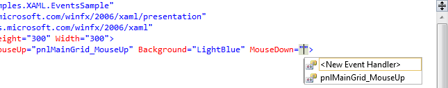
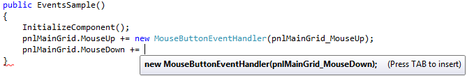

Events in XAML
Most modern UI frameworks are event driven and so is WPF. All of the controls, including the Window (which also inherits the Control class) exposes a range of events that you may subscribe to. You can subscribe to these events, which means that your application will be notified when they occur and you may react to that.
There are many types of events, but some of the most commonly used are there to respond to the user's interaction with your application using the mouse or the keyboard. On most controls you will find events like KeyDown, KeyUp, MouseDown, MouseEnter, MouseLeave, MouseUp and several others.
We will look more closely at how events work in WPF, since this is a complex topic, but for now, you need to know how to link a control event in XAML to a piece of code in your Code-behind file. Have a look at this example:
<Window x:Class="WpfTutorialSamples.XAML.EventsSample"
xmlns="http://schemas.microsoft.com/winfx/2006/xaml/presentation"
xmlns:x="http://schemas.microsoft.com/winfx/2006/xaml"
Title="EventsSample" Height="300" Width="300">
<Grid Name="pnlMainGrid" MouseUp="pnlMainGrid_MouseUp" Background="LightBlue">
</Grid>
</Window>
Notice how we have subscribed to the MouseUp event of the Grid by writing a method name. This method needs to be defined in code-behind, using the correct event signature. In this case it should look like this:
private void pnlMainGrid_MouseUp(object sender, MouseButtonEventArgs e)
{
MessageBox.Show("You clicked me at " + e.GetPosition(this).ToString());
}
The MouseUp event uses a delegate called MouseButtonEventHandler, which you subscribe to. It has two parameters, a sender (the control which raised the event) and a MouseButtonEventArgs object that will contain useful information. We use it in the example to get the position of the mouse cursor and tell the user about it.
Several events may use the same delegate type - for instance, both MouseUp and MouseDown uses the MouseButtonEventHandler delegate, while the MouseMove event uses the MouseEventHandler delegate. When defining the event handler method, you need to know which delegate it uses and if you don't know that, you can look it up in the documentation.
Fortunately, Visual Studio can help us to generate a correct event handler for an event. The easiest way to do this is to simply write the name of the event in XAML and then let the IntelliSense of VS do the rest for you:
When you select <New Event Handler> Visual Studio will generate an appropriate event handler in your Code-behind file. It will be named <control name>_<event name>, in our case pnlMainGrid_MouseDown. Right-click in the event name and select Navigate to Event Handler and VS will take you right to it.
Subscribing to an event from Code-behind
The most common way to subscribe to events is explained above, but there may be times where you want to subscribe to the event directly from Code-behind instead. This is done using the += C# syntax, where you add an event handler to event directly on the object. The full explanation of this belongs in a dedicated C# example, but for comparison, here's an example:
using System;
using System.Windows;
using System.Windows.Input;
namespace WpfTutorialSamples.XAML
{
public partial class EventsSample : Window
{
public EventsSample()
{
InitializeComponent();
pnlMainGrid.MouseUp += new MouseButtonEventHandler(pnlMainGrid_MouseUp);
}
private void pnlMainGrid_MouseUp(object sender, MouseButtonEventArgs e)
{
MessageBox.Show("You clicked me at " + e.GetPosition(this).ToString());
}
}
}
Once again, you need to know which delegate to use, and once again, Visual Studio can help you with this. As soon as you write:
pnlMainGrid.MouseDown +=
Visual Studio will offer its assistance:
Simply press the [Tab] key twice to have Visual Studio generate the correct event handler for you, right below the current method, ready for imeplentation. When you subscribe to the events like this, you don't need to do it in XAML.